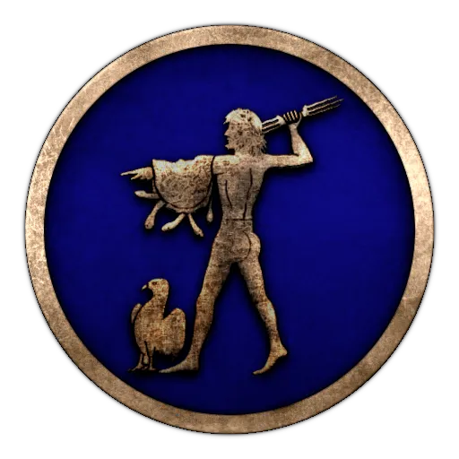
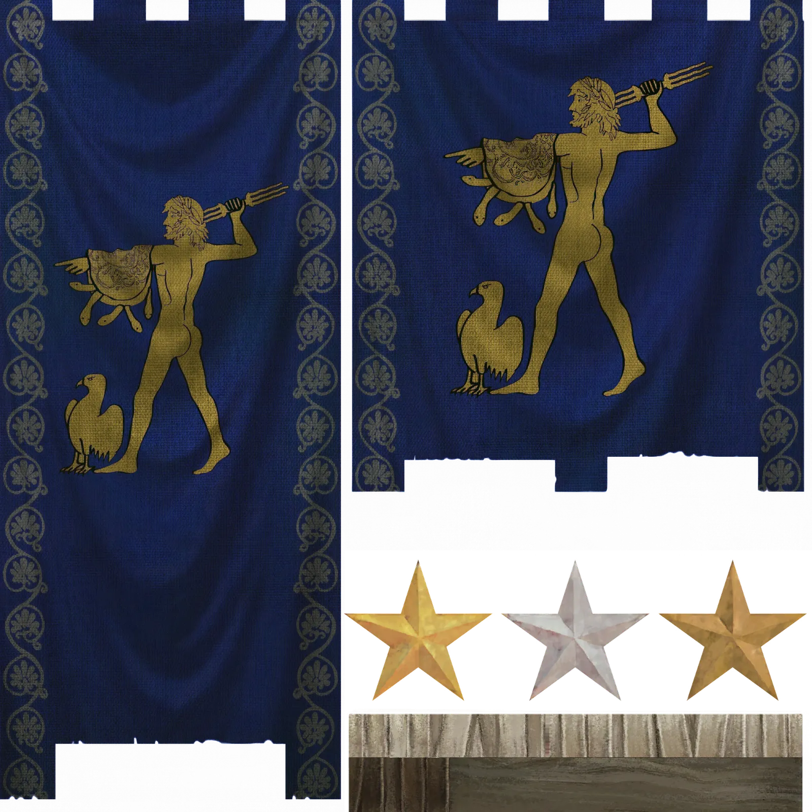
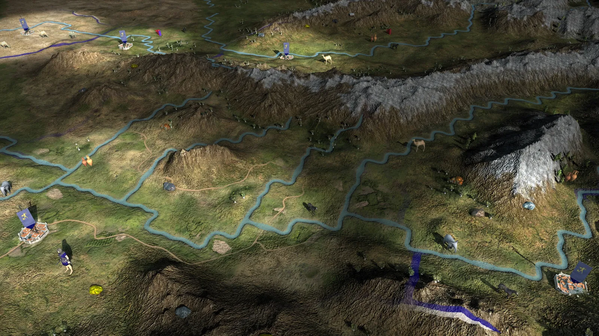

RTR: Imperium Surrectum
RTR: Imperium SurrectumBaktria
2022-02-20 · Rex Basiliscus

"Let's admit the truth from here on in: We too are Greek – what else could we be? – But with loves and with emotions that are Asia's, But with loves and with emotions That now and then are alien to Greek culture." – C. P. Cavafy, *Homecoming from Greece*
More than fifty years ago I was still a pupil to that greatest mind of Greece, the wise Aristotle who taught as he strolled under the shade of the colonnades of the Agora... It is true, you learn good manners from your elders, but from a teacher you learn to control your passions. I remember these things in my old age, as I write down these truths for my good friend Diodotos, here in this distant and once fabled land of Baktria.
We Greeks once told tales of it, of a land untouched by civilisation, where savages ate their own parents and ghastly creatures lurked beyond the mountains ... A land that only gods and heroes of legend dared to walk.
Alexander was the first mortal who broke the spell of mysticism and darkness, and it was through him that we have learnt how much we didn't know about the world. The great Aristotle once said that Barbarian and slave are the same in nature, and indeed, does not Euripides write that Hellenes should rule Barbarians, but not Barbarians Hellenes, as the former are slaves, while the latter are free? Oh, I have come to accept in my adulthood that the world is not as simple as our ancients thought. Perhaps, it is right that way, keeping us secluded from one another, thinking we are the best of men...
Baktria was once a paradise for the Persians. Deserving that title, surely, for it is a land of a thousand cities, of bountiful harvests, innumerable herds, minerals and precious stones. With Alexander's conquests – his want of going ever-further, always intrigued by what he would find over the next hill – he found kindred spirits in the multitude of Greeks who followed him East. It is their descendants who now populate the cities of Baktria. Travelers, explorers, merchants, fortune-seekers, soldiers and administrators have come in droves to the East under the inviting hands of Seleukos Nikator and his son Antiochos. Their satrap of Baktria, the elder Diodotos, had been given charge to transform its cities from Barbarian into magnificent Greek ones. During those years under Seleucid control, Baktria has truly been formed into a Hellenistic province, and its growth and increased strength have equally increased the Scythian fears and envy.
Their raids continue every year, but an attack the sort of which happened years ago on Margiane only increased the Seleucid military development in this wider region. Baktria’s strength alone stands between the Greeks and these filthy nomad hordes. Baktria needs a strong king!
From the moment I crossed the high mountains into this land, I have gazed upon a miracle of civilisation. Wherever I look, I see Greek cities and fortified towns dotting the oases, or along the meandering Oxus River. Two weeks ago, I reached the capital of this land, the ancient and oldest city of Baktra, with its formidable walls.
Thence, the satrap Diodotos has sent me laden with gifts even further East, to the newly-established seat of his son – my young pupil Diodotos – Alexandria on the Oxus, where a heron to the city's founder Kineas, awaits me to inscribe the Delphic message into its stones:
As children, learn good manners. As young men, learn to control the passions. In middle age, be just. In old age, give good advice. Then die, without regret.
As I reach the city, Diodotos greets me with affection. Entering the gates, a vision of home welcomes me: walking along the streets I recognise Rhodian porticoes, Athenian propylaea, Delian houses, Megarian bowls, Corinthian tiles, a Macedonian palace. Truly, these explorers and fortune-builders long for a Greek way of living so far away from home.
Here, surrounded by Barbarian natives who live, walled off, among them, they have recreated Greece as an image, copied all over this hard land of bitter winters and blazing summers. It is to be so, in order that never would happen what we saw among those ‘Greeks’ stumbled upon by Alexander during his conquests in Mesopotamia and Persia.
That they may never forget that they are Greek.
*Chairete*, everyone!
Welcome to our last faction reveal for 0.4.0 and my (2nd) favourite faction of them all: Bactria! Not yet an independent state (historically they would become so in the 230s), the faction at campaign start represents the satrapy of Bactria-Sogdiana, one of the most important regions of the Far East for the Seleucids. Home to many Greek settlers, some descendants of Alexander's soldiers, others enticed to colonize this distant region by Seleukos and Antiochos; they live surrounded by the native population. A rich, diverse region, full of opportunities for an adventurous soul!


As long as the Seleucid king is a strong one, the influx of Greek settlers is maintained and the border is defended, the Bactrian Greeks consider him the only true king. But the nomads from the north are becoming more and more daring in their raids, and the king is far away ... sometimes too far to react to imminent danger.
The Saka and Parni horsemen are the main threats to the Greeks in the East and will require immediate attention. Vast resources are available for a capable satrap though, and should you succeed in fighting off these barbarians from the north, a much greater opportunity awaits you further east across the Paropamisos, where the abandoned Hellenes yearn to return to the Greek community.

Thank you for your attention during this last month of Dev Diaries. We botched the faction announcements teaser a bit, so it wasn't that much of a guessing game, but we've learned from it! In any case, I hope you are as excited to play RIS 0.4.0 as we were in creating this batch of factions!
And just to remind you all about the upcoming playable factions: :1_: Achaian League :3_: Aitolian League :athens: Athens :2_: Baktria :boeotia: Boiotian League :epirus: Epirus :cyrene: Kyrene :massalia: Massalia :rhodes: Rhodes :4_: Saka :syracuse: Syracuse
Be sure to let us know in the a channel 1) which is your favourite among them, or who you can't wait to play as 2) which faction description was your favourite 3) which faction symbol and banner is the sexiest
The best (most detailed) answers will be rewarded with an early access to the new patch! (and in return you'll help us test the last bits before release 🤭 )
And keep an eye on the announcements, as we still have some things we want to show you!